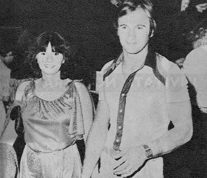

Teodora Ungureanu (ROM)
1976 Olympic B Silver
Medalist
1979
University Games AA Champion

Ungureanu, with husband Sorin
Cepoi, pictured here
in the early 1980s.
Medal Total
- Olympic Games: 2 Silver, 1
Bronze
- World Championships: 1
Silver
- World Cup: 1 Silver
Teodora was born on November 13, 1960, in
Resita. She was coached by Bela and Marta Karolyi in Gheorghiu-Dej for the majority of her career,
along with her teammate Nadia Comaneci, and transferred to Dynamo Bucharest in 1978 to work with coaches Lita and Florea Stefanescu. After retiring, she married
fellow gymnast Sorin Cepoi, had a daughter, and worked in the circus for a
while. The family lived and worked in France for several years, then
came to the USA. They own Dynamic Gymnastics in
Mohegan Lake, NY, and coached US junior national team member Sabrina
Vega.
- Competition Results
-
- 1971
- Romanian Championships (Category III): 1st Team, 1st AA
-
- 1972
- Championships of the Republic for Juniors (Category II): 1st
Team
- Cup of the Romanian Gymnastics Federation (Category II): 1st
Team, 5th AA
-
- 1973
- ITA-ROM Dual Meet: 1st Team
- Jr. Friendship Tournament (Druzhba): 3rd Team,
8th AA, 2nd B, 4th UB
- Romanian Junior Championships (Category I): 1st Team, 1st AA
- Schools Championships (Category I): 1st AA
-
- 1974
- Jr. Friendship Tournament (Druzhba): 1st Team,
4th AA, 1st FX, 2nd B
- Romanian Junior Championships (Category I): 2nd AA
-
- 1975
- Balkan Championships: 2nd AA
- Championships of the Republic: 2nd AA
FRG-ROM Dual Meet: 1st Team, 2nd AA
- Japan Junior Invitational: 1st AA, 1st V, 1st UB, 1st FX
- Pre-Olympics: 3rd AA, 2nd B, 3rd FX, 4th UB, 5th FX
- Romanian Championships: 1st Team, 2nd AA, 2nd V, 2nd
UB, 2nd B, 1st FX
ROM-CAN Dual Meet: 1st Team, 2nd AA
ROM-ITA Dual Meet: 1st Team, 2nd AA
- World Cup: 6th AA, 2nd FX, 4th V, 6th
B
-
- 1976
- Calgary International: 1st V, 1st UB, 1st B, 1st FX
- CAN-ROM Dual Meet: 1st Team, 2nd AA
- Champions All: 1st AA
- Chunichi Cup: 2nd AA
- FRA-ROM Dual Meet: 1st Team, 1st AA
- FRG-ROM Dual Meet: 1st Team, 2nd AA
- GBR-ROM Dual Meet: 1st Team, 2nd AA
- NED-ROM Dual Meet: 1st Team, 2nd AA
- Milan Grand Prix: 1st AA
- Milk Meet: 1st AA
- Olympic Games: 2nd Team, 4th AA,
2nd UB, 3rd B
- Romanian Championships: 2nd AA, 2nd V, 2nd UB, 2nd B, 1st FX
- USA-ROM Dual Meet: 1st Team, 2nd AA
-
- 1977
- Champions All: 1st AA
ESP-ROM Dual Meet (Barcelona): 1st Team, 2nd AA
- ESP-ROM Dual Meet (Madrid): 1st Team, 2nd AA
- European Championships: 4th AA, 7th UB, 8th V
- FRA-ROM Dual Meet: 1st Team, 2nd AA
- International Championships of Romania: 2nd AA, 1st V, 2nd B, 2nd FX
- Orleans International: 2nd AA
ROM-CAN Dual Meet: 1st Team, 2nd AA
-
- 1978
- Balkan Championships: 1st Team, 1st AA, 1st V, 1st B
Coca Cola International: 1st AA
- FRG-ROM Dual Meet: 1st Team, 2nd AA
- Romanian Championships: 2nd AA, 2nd V, 3rd FX
- ROM-GBR Dual Meet: 1st Team, 2nd AA
World Championships: 2nd Team
-
- 1979
- Coupe de Geneve: 6th AA
- Hungarian International: 2nd AA
- Romanian Championships: 1st AA
University Games: 1st AA, 1st B, 2nd UB,
2nd FX, 3rd V
- This page was created on November 10, 1997 and was last
updated on April 01, 2021.
© Gymn Forum